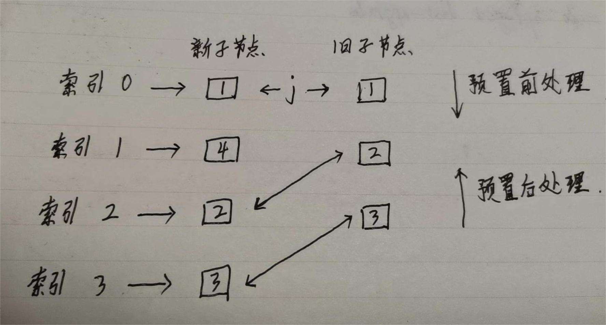
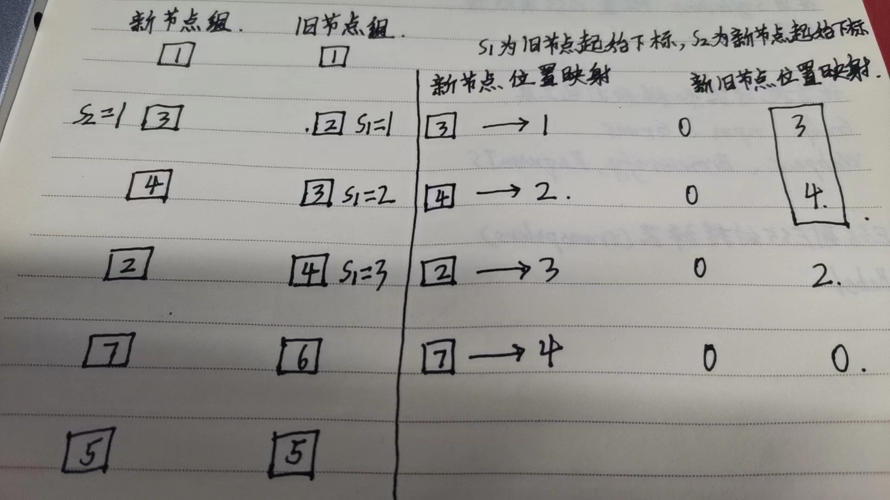

前言
前面我们说了diff算法里面的双端对比，主要是在vue2中使用。但在vue3中，使用了另一种比双端diff更快的算法 – 快速diff，今天我们来看一下快速diff的使用方式。
快速diff的使用场景
- 预处理前置节点
- 预处理后置节点
- 仅有新增节点
- 仅有卸载节点
- 新增、卸载、移动节点
仅从上面这五种场景的字面意思上面我们大概能看出它们对应的处理情况，下面我们来看一下，每种场景具体的处理逻辑是怎么样的。（PS：为了便于理解，本文中的节点仅用数字表示）
预处理前置节点与预处理后置节点

从上图我们可以看到，分别有一个新子节点的组和一个旧子节点的组，我们指定一个变量j来代表当前的索引值。
- 预处理前置节点就是表示j从0开始处理当前的两个子节点组，从索引0开始分别对比新旧子节点组，相同的时候不做处理（本文中由于节点元素均为数字所以不做处理，实际使用算法时，根据情况做处理，比如更新旧节点）。索引加1，对比下一索引的节点，从上图里面看，下一索引位置的节点不同，所以前置节点的预处理结束。
- 预处理前置节点对比完之后进行预处理后置节点的对比，我们设置newEndIdx和oldEndIdx分别对应新旧子节点组的末尾索引，获取对应位置的子节点进行对比，如果相同，newEndIdx和oldEndIdx就减1，指向前一位继续对比，直到对应位置的子节点不相同。
从上面这个图可以看出来，当我们经过预处理前置节点和预处理后置节点这两步之后，明显新节点组还剩余一个4，旧节点组已经对比完了，所以我们引入下一种场景：仅有新增节点.
vue3源码
仅有新增节点
仅有新增的节点，我们实际上只需要把节点添加到对应位置去即可，从上一步来看，就是新节点组最后对比的不相同的节点的位置，也就是说放在newEndIdx的位置。对应到真实场景中，比如dom的处理时，是需要把新的节点挂载到newEndIdx+1上去，即newEndIdx+1的位置作为锚点。
上图中就是新节点组中的4，把它加到旧节点组的对应位置之后，对比就完成了，新旧两个节点组就一样了。
仅有卸载节点
仅有卸载节点，就是指，新节点组对比结束了，没有剩余未对比的元素，而旧节点组还有为对比的节点，即剩余的节点在新节点组中不存在，所以直接删除即可，即卸载dom节点。
新增、卸载、移动节点

这种场景较为复杂，我们先从容易的动手，先删除后续不会用到的旧虚拟节点，比如上图的6，下面我们看一下怎么找到6这个位置的节点。
做法是构建一个新虚拟节点的key与其下标的映射，然后遍历未处理的旧虚拟节点数组，使其每一项访问前面映射的key得出其value，如果value是undefined就证明该虚拟节点在新虚拟节点数组中没有出现，需要删除。
删除用不到的节点之后，剩下可能的就是“移动”和“创建”两种操作。
vue3是利用“最长递增算法”求出最长递增序列，不满足最长递增子序列的节点就是需要移动的节点。
下面我们来看一下什么是最长递增子序列以及应该怎么使用达到我们的目的。
最长递增子序列
什么是最长递增子序列?
以数组每一项为开头，在数组中从前往后对比，前一项要比后一项小（即呈递增趋势），相等也不行，把找到的数拿出来构建的数组叫递增子序列，而“最长递增子序列”则是这些子序列中最长的那个。我们假定有数组【5,1,6,8,10】，那么它的最长递增子序列就是【5,6,8,10】和【1,6,8,10】
查找最长递增子序列
查找最长递增子序列的方法有很多种，比如从后往前查找，前一项比当前项小时，子序列长度加1，如果前一项比当前项大或等于当前项时，再将前一项与当前项之后的每一项进行比较，直到数组比较结束。
1 | const seq = [5, 1, 6, 8, 10] |
最长递增子序列的使用
我们为了便于说明，拿上面的第二张图来举例，上述四种场景的比较之后，我们得到了一个新旧节点之间的映射关系，目前新节点的元素是【6,4,5,8】,我们可以得到映射关系是【6,4,5,0】这个新数组的最长递增子序列是【1,2】,接下来，我们只需要从后往前一次做对比即可。
我们定义变量 i 记录位置，定义变量 j，记录最长递增子序列的位置，初始化为 1，
当 i = 3 时，位置值为 0，对应节点为 8，说明 8 是新增节点，直接挂载；
当 i = 2 时，位置值为 5，对应节点为 5，i = 2 处于最长递增子序列 j = 1 处， 因此无需移动直接跳过。一旦找到最长递增子序列元素，i 和 j 需同时往上移动；
当 i = 1 时，位置值为 4，对应节点为 5，i = 1 处于最长递增子序列当中 j = 0 处，因此无需移动直接跳过。i 和 j 同时再往上移动；
当 i = 0 时，位置值为 6，对应节点为 6，i = 0 不处于最长递增子序列中，因此该节点需要移动。
上述步骤执行结束后，可以看到旧节点已变更为新节点，变更结束。

Sukoshi
贵在坚持
84
0
2